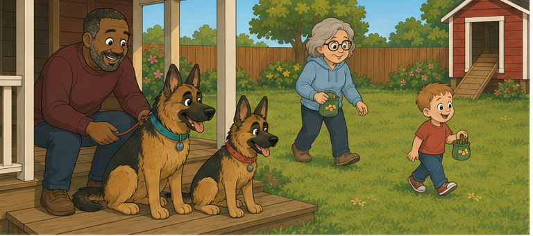
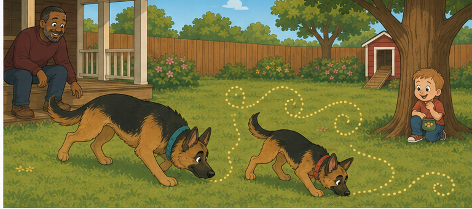
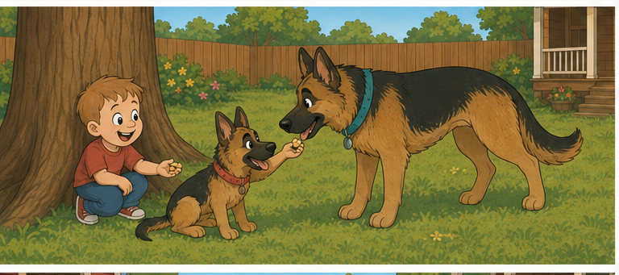
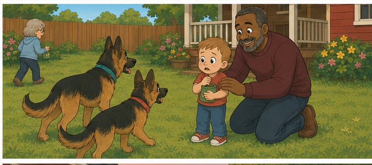
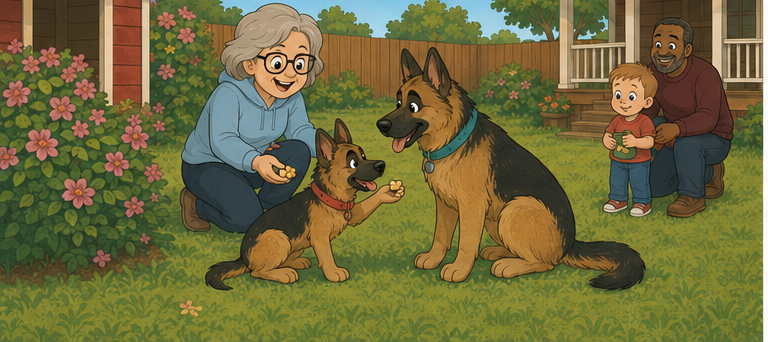
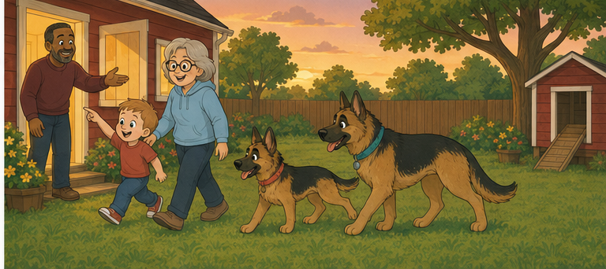

Ruby, Riley &
the Scent of Home
A nose-work story about finding family and knowing where you belong.

The illustration could not be loaded.Expected: images/page-01.png
Ready, Set, Hide!
Ruby and Riley loved to play nose-work. They used their noses to find people hiding in the yard.
Grumpy held the dogs safely on the porch while Gaga and Milo chose nearby hiding places.
Each carried a little cup of cheese.
“Wait until I say go,” called Grumpy.
Two noses twitched. Four ears stood tall.
Ready… set… SNIFF!

The illustration could not be loaded.Expected: images/page-02.png
Follow Your Noses
Riley lowered her nose and followed one careful step at a time.
Ruby zigged toward a flower. She zagged toward the shed. Then she hurried back to Riley.
Sniff-sniff! Snuffle-snuffle!
A delicious smell floated past.
Was it Milo?
Was it cheese?
It was both!

The illustration could not be loaded.Expected: images/page-03.png
They Found Milo!
Ruby peeked around the tree.
“You found me!” Milo laughed.
Riley wagged. Ruby wiggled from her nose to her tail.
Milo gave each dog one tiny piece of cheese.
Queso means cheese.
“Good sniffing!” said Milo. “Now go find Gaga!”
And off the dogs went again.

The illustration could not be loaded.Expected: images/page-04.png
What If They Forget Me?
Riley and Ruby followed Gaga’s scent across the grass.
Milo watched them go. His smile slipped away.
“What if they keep looking for Gaga and forget about me?” he whispered.
Grumpy knelt beside him.
“Looking for Gaga does not mean they stopped loving you. A heart has room for everyone.”
Milo held Grumpy’s hand and watched two wagging tails disappear behind the flowers.

The illustration could not be loaded.Expected: images/page-05.png
They Found Gaga!
Behind the tallest flowers, Riley’s tail began to thump.
Ruby bounced through the grass.
There was Gaga!
“Wonderful noses!” Gaga cheered, giving each dog a tiny treat.
Then Riley looked back toward Milo.
Ruby looked back too.
They had found Gaga—and they still remembered exactly where Milo was.

The illustration could not be loaded.Expected: images/page-06.png
¡A Casa!
From the porch, Grumpy called, “Everybody—¡a casa!”
Gaga came from the flowers. Ruby and Riley raced beside her. Milo ran to meet them.
Casa means home or house.
¡A
casa! means Home!
Milo was not worried anymore.
Sometimes you wait to be found. Sometimes you follow the trail. But the people who love you always come back together.
And Milo smiled, because he knew where home was all along.